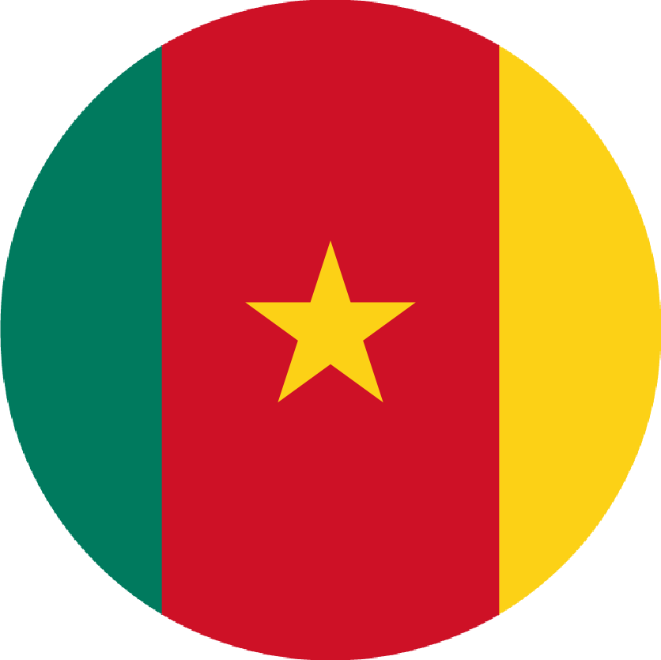
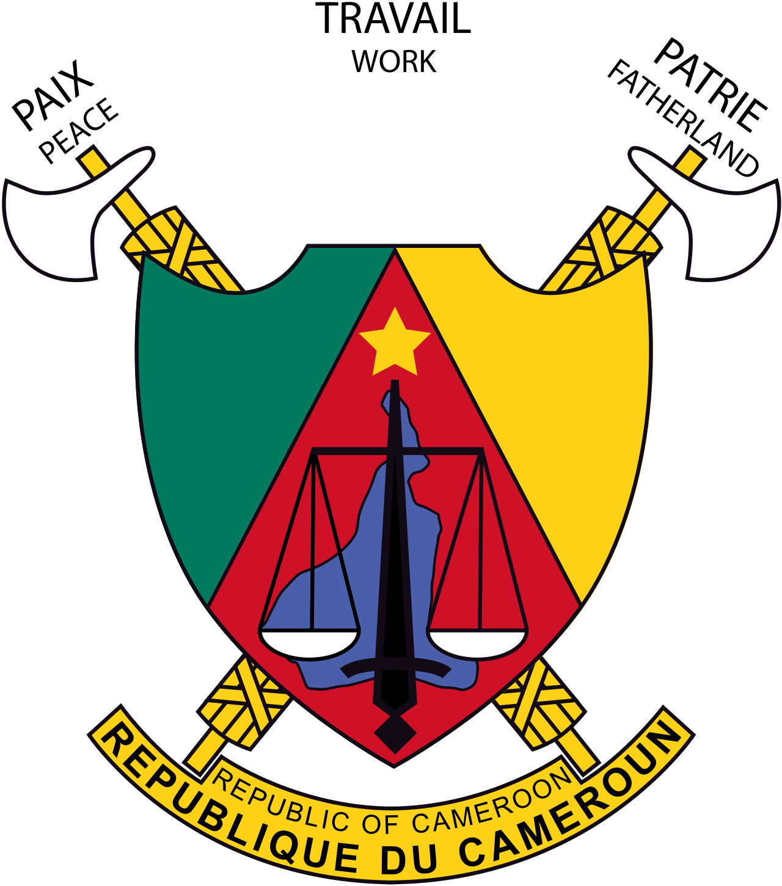
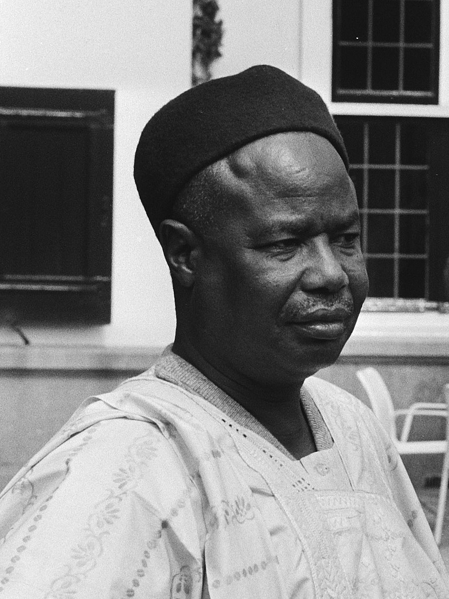
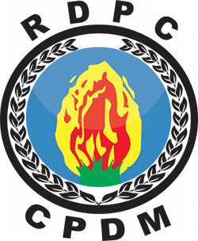

REPUBLIC OF CAMEROON


"Peace – Work – Fatherland"
FIRST PRESIDENT


- Ahmadou Babatoura Ahidjo
- Political Party: C.P.D.M.
- In Office From: 5 May 1960.
- In Office until: 6 November 1982.
- Born: 24 August 1924.
- Died: 30 November 1989.
- Aged: 65 Years Old.
SECOND PRESIDENT

Incumbent President
- Paul Biya
- Political Party: C.P.D.M.
- In Office From: 6 November 1982.
- Born: 13 February 1933.
- Aged: 90 Years Old.